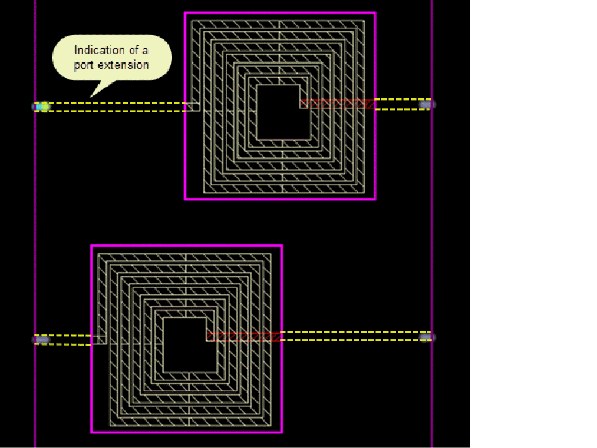
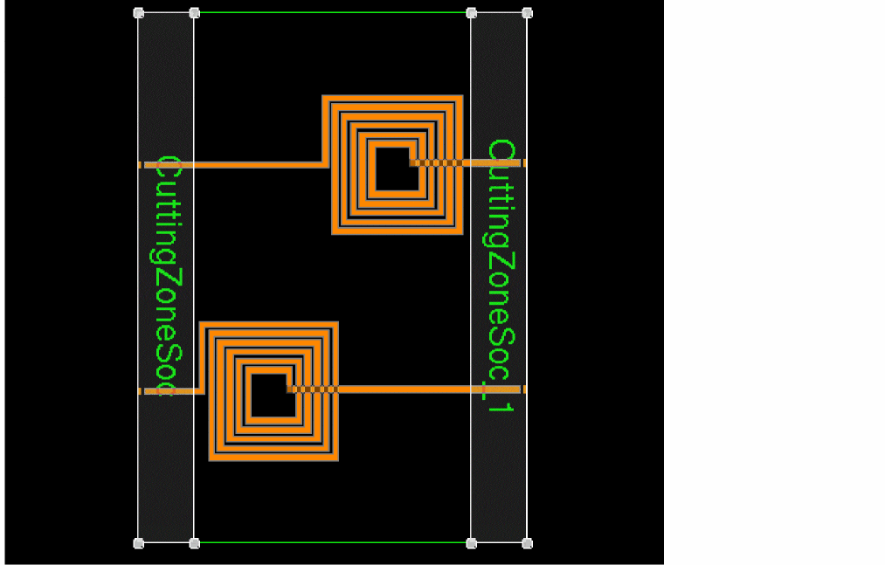
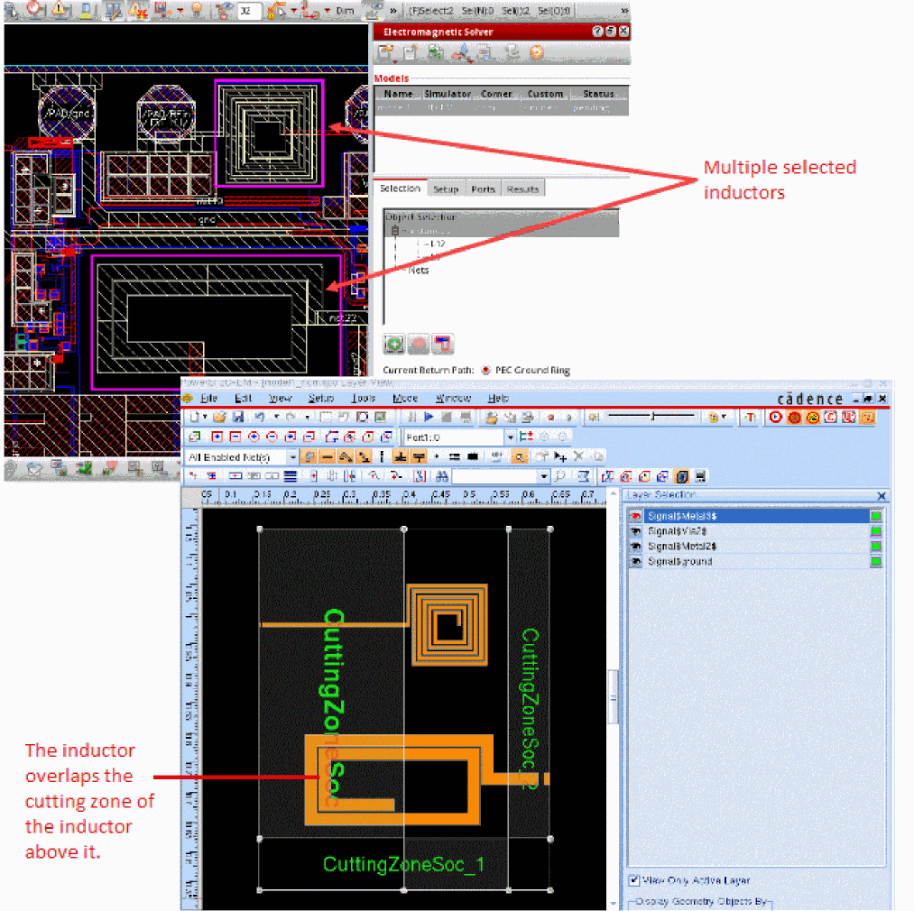
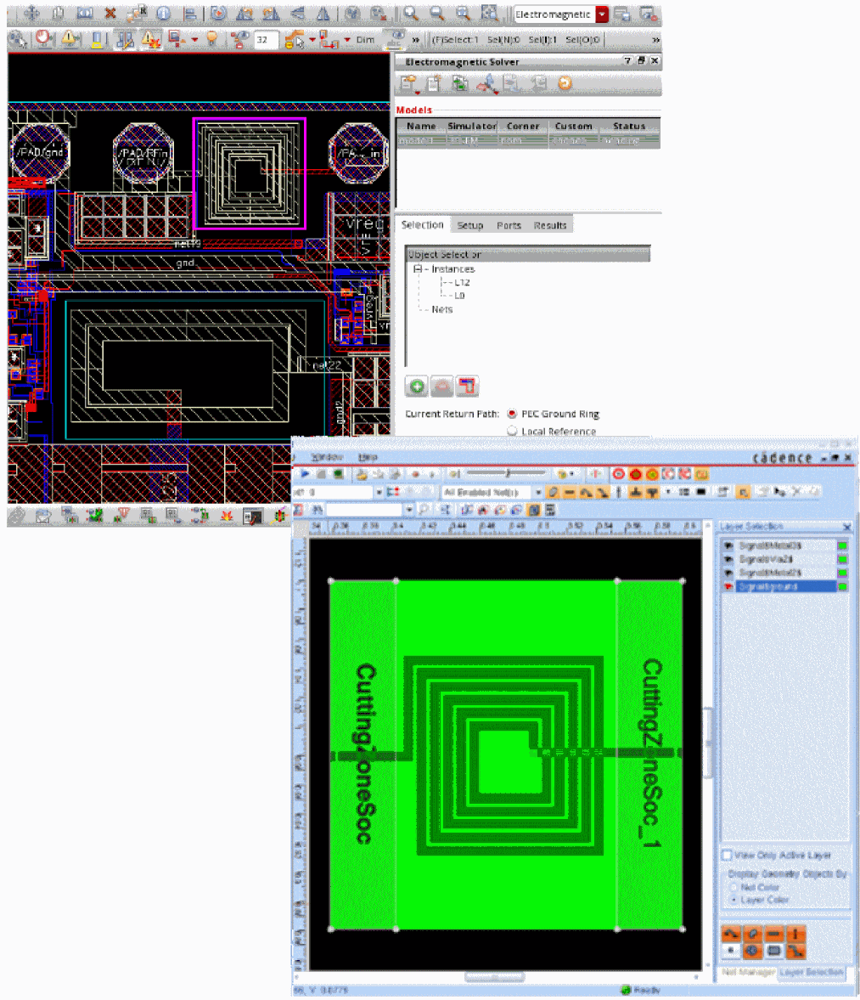

Guidelines for Current Return Path in Models that Use Clarity 3D Solver
You can specify the current return path for a model in the Current Return Path field on the Selection tab of the Electromagnetic Solver assistant. The current return path is an important consideration when deciding about the approach to create ports for a model.
If you know where to place the negative edges of the ports and you want full control on the ports, choose Local Reference on the Selection tab. You can begin with automatic port generation, but you can modify the settings or create new ports as per your requirements.
If you are not sure about the negative edges of ports, and you want Layout MXL to automatically identify the current return, ensure that the model can be enclosed in a perfectly conducting box on all sides, and choose PEC Ground Ring and proceed with automatic port generation.
You can consider the following guidelines while choosing a current return path:
-
The
Local Referencecurrent return path can be used in all possible cases and there is no limitation for the length and alignment of port extensions, but you need to find the correct ground for each port by connecting it to the real ground metal or plane below it or next to it. - The PEC Ground Ring option works best for simple passives, such as inductors, when the instances can be placed within a boundary. Placing port extensions might not be feasible in complex scenarios because extensions that cross over each other or other metals can result in shorts.
-
Clarity 3D Solver supports only rectangular deembedding zones. When choosing PEC Ground Ring, ensure that all the ports are aligned to the boundary with the same length and the same starting point. Otherwise, deembedding is not perfect. If the above-mentioned requirements are not met, it is recommended to choose Local Reference as the current return path.
Consider the following example where the left port for the upper instance needs to be placed on the left boundary edge even if it is far away from the instance.
When deembedding is done for the above example, the cutting zones are properly placed in such a way that only port extensions are eliminated from the model, as shown below.
If the port extensions are of different sizes, the deembedding zone needs to be wide enough to cover the longest port extension of one device. In that case, there are chances that the cutting zones cover a part of real geometry of other devices, as shown in the example given below.
This is not a desired case. The deembedding zone is a zone where the effect of port extensions is calculated and removed from the model. If a real geometry is falling in the deembedding zone or cutting zone, as shown above, it results into the loss of the device details from the model. Only the effect of a part of device that is falling in the non-cutting zone is considered for model creation.
Therefore, it is necessary to create the model in such a way that the cutting zones correctly overlap the port extensions on all sides, as shown in the figure given below.

Return to top